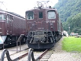

| EF15形電気機関車 | ||||||||||||||||||||
| 概要 | ||||||||||||||||||||
 昭和22年から34年にかけて製造された戦後の旧型貨物用直流機関車の代表機で、計202両製造された。202両もの大所帯になったEF15形機関車は、製造時期によって主電動機やパンタグラフなど、細かい所を挙げるとキリがない程いろいろなタイプが存在した。それらの細かい相違は専門書に任せることにし、ここでは概略のみを書き記す。貨物用として誕生したEF15は、同時期に量産が始まった旅客用のEF58と設計が共通化されていたため、両機は兄弟機と呼ばれていた。大きな違いとしては、EF58の先軸が2軸である事に対しEF15が1軸である事や、EF58の歯数比が2.68・最高速度が100km/hである事に対し、EF15のそれが4.15・75km/hである事があげられる。 EF15形機関車のうち、初期製造グループの一部の機関車は急勾配の板谷峠を受け持っていた福島第二機関区に配置され、耐寒耐雪装備や車輪冷却用の撒水装置を装備して活躍を開始した。しかし、下り勾配の連続制動時に撒水装置から撒かれる水だけでは車輪の冷却が追いつかないため、EF11形機で好結果を得ていた電力回生ブレーキを装着する事になり、昭和26～27年にかけてEF16形機関車へ改造された（EF15からEF16への改造履歴を、EF16のページに記す）。 上越線関連では、高崎第二機関区・水上機関区・長岡第二機関区に配置された初期製造グループのEF15の一部が、やはり電力回生ブレーキを装着してEF16に改造された。水上機関区には延べ8両のEF15が配置されたが、上越線全線電化による機関車配置の再編成があった関係で在籍期間はさほど長くなかった。対照的に、高崎第二機関区は新製配置や転入によって次第にその数を増やし続け、EF15の一大拠点となった。昭和62年のJR化を前にEF15は全機が現役を引退してしまったが、高崎第二機関区に配属されたEF15は延べ90両に及んだ。 |
||||||||||||||||||||
| 機関車の諸元 | ||||||||||||||||||||
|